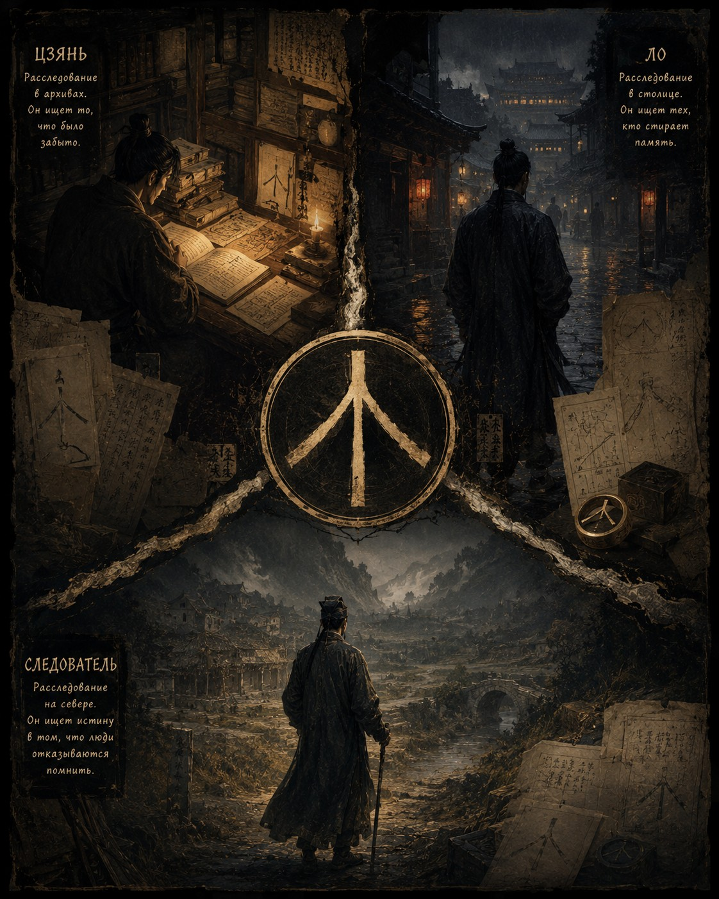

Дело о трех дорогах

После разлучения время пошло иначе. Раньше любое дело начиналось для нас с голоса, жеста и записи почти одновременно. Ло видел то, чего не мог увидеть я, Цзянь удерживал в памяти то, что ускользало от нас обоих, а я слушал людей до тех пор, пока их слова не начинали спорить с дыханием. Теперь между вопросом и ответом лежали дороги, заставы, чужие руки и недели ожидания.
Сначала мне казалось, что я просто отвык служить один. Северный округ был холоднее столицы, люди там говорили медленнее, а ветер ночами так долго ходил между стенами управы, что чудилось, будто кто-то шепчет за перегородкой. Я получил почетную должность, просторный дом и дюжину подчиненных. Но всякий раз, когда мне приносили новое дело, я по привычке поворачивался туда, где должен был стоять Ло, и ждал, что Цзянь тронет меня за рукав.
Первое письмо пришло не ко мне. Его копию, вырезанную на пластине, Цзянь показал мне гораздо позже, когда мы снова были вместе. Написал он тогда Ло, потому что Ло мог прочесть обычное письмо сразу, без посредников и особых знаков. Цзянь сообщал, что обнаружил в Главном архиве собрание бумаг, которого не было ни в одном каталоге. Документы из него исчезали, а ссылки на них оставались в других делах, как остаются следы на сырой земле, когда человек давно ушел.
Он писал, что нашел восемнадцать упоминаний одного и того же знака. Знак походил на след птичьей лапы: одна черта внизу и три, расходящиеся от нее вверх. Встречался он в документах разных эпох, разных ведомств и разных провинций. Будь это знак школы, рода или тайного общества, его еще можно было бы объяснить. Но он стоял там, где никакой связи быть не могло: в старых списках переписчиков, на полях изъятых трактатов, в попорченных каталогах храмовых земель и в бумагах о переселении деревень после давно забытых смут.
Ло сумел ответить только через три недели, потому что из дворцовой стражи письмо так просто не передашь. Ответ был, как всегда, короток. Если знак похож на дорогу, которая делится на три, писал он, то он видел его не в архиве, а в живой столице. Сначала на перстне человека, за которым наблюдал несколько месяцев. Потом на печати в закрытом помещении дворцовой стражи. Затем на балке старого здания возле Палаты Ритуалов. А утром, перед тем как отправить письмо, он нашел тот же знак на надгробии, таком древнем, что надпись на нем почти стерлась, а три расходящиеся черты уцелели.
Так Цзянь понял, что дело вышло за стены архивов, и написал мне. Обычное письмо пришлось бы читать чужому человеку, поэтому он прислал тонкую деревянную пластину с резными знаками. Резал он ее медленно и, как признался позже, несколько раз начинал заново, потому что ошибку на дереве не исправишь. Когда пластина дошла до северного округа, я долго держал ее в руках, прежде чем начал читать.
Цзянь сообщал, что нашел документы, связанные с несколькими нашими прежними делами. Сами пропажи тревожили его уже меньше. Его пугало то, что кто-то удалял не только сведения, но и память о том, что сведения были удалены. Он писал, что Ло видел знак трех дорог в столице, а сам он нашел его в бумагах, которые должны были исчезнуть несколько поколений назад. В конце было вырезано: «Если вы продолжаете расследование в северном округе, обратите внимание на места, которые есть в документах и которых нет в памяти людей».
Тогда я еще не знал, что письмо уже привело меня к новому делу. Через два дня ко мне пришел староста из деревни Шаньюй с жалобой, которую сам считал пустяковой. Жители спорили из-за старой каменной дороги, уходившей к горам. Дорога вела к заброшенному мосту, за которым, как уверяли местные, никогда не было никакого жилья. Между тем в податных книгах округа значилась деревня Хуайшань, почти сто лет исправно платившая подати. В старых судебных делах нашлись жалобы ее жителей, записи о браках, споры о земле и даже сведения о починке колодца.
Я отправился туда с двумя местными помощниками и почти сразу понял, как сильно мне не хватает прежних спутников. Помощники были старательны, но один описывал мне только то, что сам считал важным, а другой так боялся ошибиться, что замолкал, стоило мне переспросить. Ло с первого взгляда понял бы, кто из крестьян лжет, а кто повторяет услышанное. Цзянь уже к вечеру принес бы выписки из всех окрестных архивов. Теперь я шел медленно, как человек, который знает дорогу только по чужим шагам.
Дорога к мосту существовала. Я чувствовал ее под ногами: старые плиты лежали слишком ровно для деревенской тропы, по краям местами уцелел каменный бортик. Под мостом шумела мелкая вода. На той стороне, по словам помощников, начинались заросли и пустые поля. Местные уверяли, что деревни там никогда не было, и отвечали все одинаково, слово в слово. Живая память так не звучит.
Я расспрашивал стариков, пастухов и сборщиков хвороста. Все повторяли, что за мостом ничего нет и не было. Только слепой музыкант, ночевавший при храме, припомнил старую свадебную песню, в которой упоминалась Хуайшань. Он не знал, что это деревня, для него это было просто слово из припева. Когда он напел несколько строк, я услышал знакомый оборот: пташка спрашивала у камня, где ее гнездо, а камень помнил только время.
На следующий день я приказал поднять старые кладбищенские списки. Помощники вернулись растерянными. Семьи из Хуайшани в списках упоминались, а могил найти не удалось. Тогда я велел отвести меня за мост и долго ходил по заросшим полям, слушая землю. Звучит это странно, но у пустых мест тоже есть голос. Там, где жили люди, иначе ложится ветер, иначе держится вода, иначе хрустит под ногой черепок. К вечеру мы нашли остатки печей, каменный обод колодца и несколько обломков чаш, давно ушедших в землю.
Деревня существовала. Соседи ее забыли, и обычным запустением это объяснить было нельзя.
Тем временем Ло в столице вел собственный розыск. Позже он сам рассказал мне о нем. В дворцовой охране Ло заметил человека, который появлялся там, где появляться не должен. То он был служащим Палаты Ритуалов, то носильщиком, то помощником писца, то старшим стражником, которого никто из стражников не знал по имени. В лице Ло не был уверен, и это злило его больше всего. Лицо менялось, ускользало и не держалось в памяти. Намерение оставалось прежним.
Для Ло это решало дело. Глухие читают людей не только по лицу, но и по тому, как человек занимает место среди других. Один и тот же страх прячется под разными улыбками, одна и та же решимость живет в разных телах. Ло утверждал, что незнакомец всегда входил в помещение так, будто заранее знал, кто где стоит, кто кому мешает и какой проход освободится через несколько мгновений. Чудом Ло это не считал. Он считал это наблюдательностью, доведенной до совершенства.
Однажды он проследил за этим человеком до старого служебного двора возле Палаты Ритуалов. Там незнакомец остановился у деревянной балки, тронул ее пальцами и ушел. Ло подошел ближе и увидел на дереве знак трех дорог. Знак был старым и почти стерся, но недавно кто-то провел по нему рукой и счистил пыль. В тот же вечер Ло написал Цзяню, что знак в столице не мертв и что им пользуются.
Цзянь в это время был ближе всех к настоящему ответу и дальше всех от возможности быстро им поделиться. В Главном архиве он нашел несколько списков, где одно и то же место называлось по-разному. В одних бумагах это был храмовый округ, в других место собраний учителей, в третьих заброшенная деревня, в четвертых просто «северная площадка». Возле каждого упоминания стоял знак трех дорог. Цзянь понял, что перед ним не знак рода и не знак школы. Знаком помечали место.
Позже он признался мне, что тогда впервые испугался за всех нас. Если знак указывал на место, то и песня могла быть не просто песней. Если в песне говорилось о трех дорогах, значит, кто-то сохранил путь не в архиве и не на карте, а в словах, которые передавали друг другу дети, лодочники и приговоренные к смерти сверщики. Жечь книги Империя умела. Выжечь разом все песни из всех человеческих голов она не могла.
Цзянь отправил мне вторую пластину, и она пришла через месяц после первой. К тому времени я уже нашел остатки Хуайшани, но не понимал, зачем кому-то понадобилось стирать память о деревне. Цзянь писал, что знак трех дорог, скорее всего, обозначает не учение, а путь к месту. Древние документы упоминали северную площадку, где когда-то собирались учителя разных школ. Название Хуайшань встречалось рядом с ней дважды, оба раза в попорченных текстах.
Почти одновременно пришло письмо от Ло. Ло писал кистью и осторожно, без имен, так что я дал письмо помощнику, и тот прочел его мне вслух. Ло сообщал, что человек без устойчивого лица связан с Палатой Ритуалов, но открыто ей не служит. Он появляется возле тех, кто изымает старые документы, и возле тех, кто тайно их сохраняет. В конце Ло приписал: «Он не прячет знак. Он проверяет, кто его заметит».
Тогда я впервые понял, что мы втроем расследуем одно дело. Я нашел место, о котором люди забыли. Цзянь нашел документы, которым не дали исчезнуть до конца. Ло нашел людей, которые следят за теми, кто способен помнить. Каждый из нас шел своей дорогой и видел только треть, и каждый, оставшись один, едва не принял свою треть за целое.
В ту ночь я снова отправился к заброшенной деревне. Помощники отговаривали меня, но я настоял. За мостом ветер шел иначе, чем днем. Шуршали заросли, глухо звучала вода под камнями, где-то далеко пела ночная птица. Я подошел к старому колодцу и положил ладонь на холодный камень.
Там и появился незнакомец. Его шаги я услышал раньше, чем голос.
— Теперь вы знаете, что одна дорога не приводит домой, — сказал он.
Я не обернулся.
— Ло видел ваш знак в столице.
— Это не мой знак.
— Цзянь нашел его в архивах.
— Это не архивный знак.
— А здесь была деревня.
— Здесь было место, куда сходились дороги.
Я долго молчал. Ветер шел по траве, и мне казалось, что вокруг нас стоят люди, которых давно никто не называл по именам.
— Что здесь произошло?
Незнакомец ответил не сразу.
— Когда-нибудь вы зададите этот вопрос правильно.
— А сейчас?
— Сейчас вы все еще спрашиваете, кто виноват.
Я почувствовал раздражение.
— Потому что я следователь.
— Нет. Потому что так легче.
Он подошел ближе, и под его ногой хрустнул черепок.
— Цзянь ищет память. Ло ищет намерение. Вы ищете истину. По отдельности каждая из этих дорог приводит человека только к собственной гордости.
— А вместе?
Он помолчал.
— Вместе они иногда ведут домой.
Я хотел спросить, куда именно, но он уже отходил. Звать помощников я не стал, толку от этого не было бы. К тому же впервые за все наши встречи мне показалось, что он не убегает от меня. Он опять оставлял меня на дороге, которую я должен был пройти сам.
В управе меня ждала новая посылка от Цзяня. Внутри лежала тонкая пластина, а на ней были вырезаны строки песни, собранные из нескольких вариантов. Пташка летела над тремя дорогами, первую забыла, вторую потеряла, третью домой принесла. Пташка спрашивала у ветра, у воды и у камня, и каждый помнил только часть ответа. Последнего куплета по-прежнему не было.
Я долго водил пальцами по этим строкам, а потом улыбнулся, впервые за месяцы разлуки. Загадку я не разгадал, до этого было еще далеко. Но теперь я знал главное: мы по-прежнему шли вместе, только дороги между нами стали длиннее.
Дело о Хуайшани я закрыл как спор о заброшенной земле и ошибках в старых податных книгах. Так было безопаснее для жителей окрестных деревень и для тех немногих следов памяти, которые еще можно было уберечь. В собственных записях я назвал его иначе, делом о трех дорогах. Тогда я и понял, что нас разделили не из одного страха перед нашими расследованиями. Вместе мы уже были тем, чего Империя боялась больше всего. Целостным человеком никто из нас не стал, но втроем мы видели мир целиком.